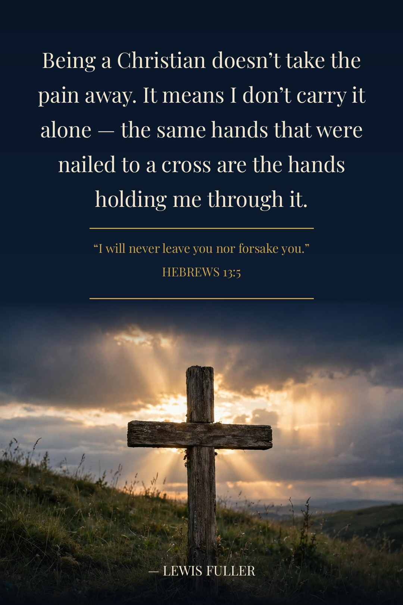

“Being a Christian doesn't take the pain away. It means I don't carry it alone — the same hands that were nailed to a cross are the hands holding me through it.”
Pain is part of life in a fallen world — even for the Christian. Faith was never a promise that it wouldn't hurt. It is the promise that you will not hurt alone.
“I will never leave you nor forsake you.” — Hebrews 13:5 (ESV)
The hands holding you are not distant hands. They are scarred hands — hands that were nailed to a cross for you. The One who holds you knows pain from the inside.
“The LORD is near to the brokenhearted and saves the crushed in spirit.” — Psalm 34:18 (ESV)
Whatever pain you are carrying today, you do not carry it by yourself. He is with you in it, and He is not letting go.